Aula 4 — recorrência espacial e atores: Sul × SEALBA
Nas aulas 1-3 construímos análises COP a COP baseadas em variáveis meteorológicas. Esta aula muda o ponto de vista:
o sujeito agora não é a COP individual, mas conjuntos de COPs (municípios, produtores, células espaciais, peritos, IFs);
os indicadores não são meteorológicos, mas administrativos — recorrência, concentração, atores;
o método central é a análise comparativa entre duas regiões: o Sul (RS, SC, PR) e o SEALBA (SE, AL, BA).
Recortes regionais
ESTADOS_SUL = ['RS', 'SC', 'PR']
ESTADOS_SEALBA = ['SE', 'AL', 'BA']
gdf_sul_def = gdf_sicor[
(gdf_sicor['cd_estado'].isin(ESTADOS_SUL)) &
(gdf_sicor['status_cop'] == 'deferida')
].copy()
gdf_sealba_def = gdf_sicor[
(gdf_sicor['cd_estado'].isin(ESTADOS_SEALBA)) &
(gdf_sicor['status_cop'] == 'deferida')
].copy()
Nota
Restringimos a status_cop == 'deferida' porque a deferida é a
COP efetivamente reconhecida pelo programa, refletindo o evento
como risco coberto. Análises de “padrão de pagamento” e
“concentração de peritos” só fazem sentido sobre o conjunto
deferido.
🖼️ Imagem sugerida (IMG-TODO)
- Imagem ideal:
Mapa do Brasil destacando a região agrícola SEALBA (Sergipe, Alagoas e Bahia) e, em outra cor, a Região Sul (RS, SC, PR) — os dois recortes comparados na aula.
- Função:
localiza geograficamente os dois recortes (Sul × SEALBA) contrastados ao longo da aula, antes das análises municipais.
- Busca sugerida:
“SEALBA região agrícola mapa Embrapa”; “Brazil South region SEALBA map”
- Fonte provável:
Embrapa, IBGE, Wikimedia Commons
- Facilidade:
média
Seção 1 — escala municipal: top 20 + heatmap + coroplético
Para cada recorte (Brasil, Sul, SEALBA), três visualizações encadeadas:
tabela ranking com volumes (operações, COPs por evento, razão COPs/operação);
heatmap município × evento;
coroplético sobre malha IBGE.
recorr_mun = (
df.groupby(['cd_ibge_municipio', 'cd_estado', 'nome_evento'])
.agg(n_cops=('ref_bacen', 'count'),
n_operacoes=('ref_bacen', 'nunique'))
.reset_index()
)
pivot_ops = recorr_mun.pivot_table(
index=['cd_ibge_municipio', 'cd_estado'],
columns='nome_evento', values='n_operacoes', fill_value=0
).reset_index()
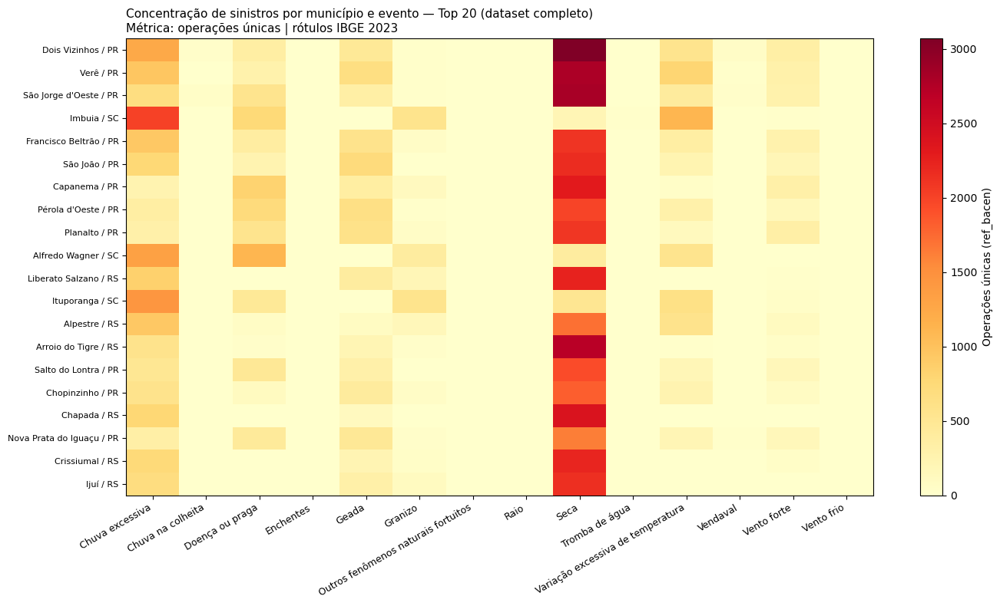
Figura 79 - Heatmap município × evento para os Top 20 municípios do Brasil por volume de operações. Cor = nº de operações. Permite ver visualmente quais municípios são “puros” (1 evento dominante) vs “diversos” (vários eventos).
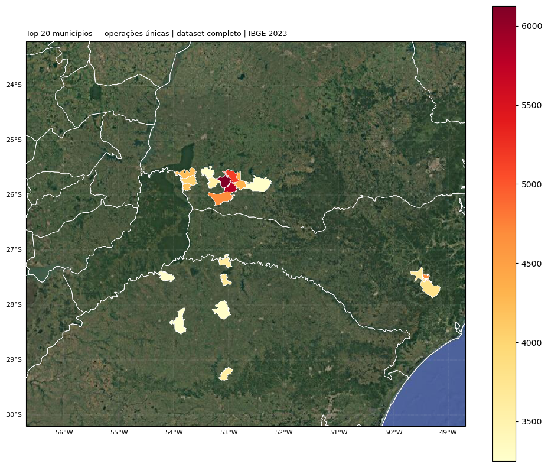
Figura 80 - Coroplético dos Top 20 municípios sobre a malha IBGE.
Figura 81 - Heatmap município × evento — recorte Sul.
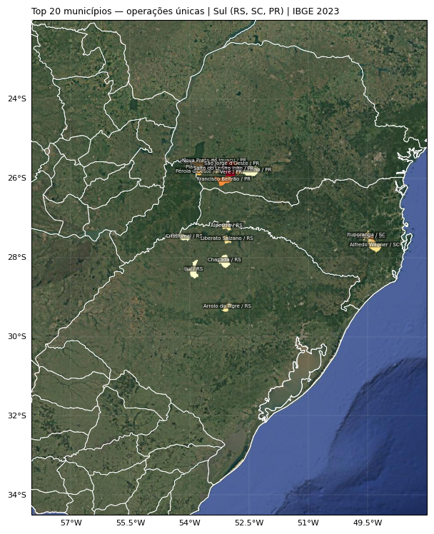
Figura 82 - Coroplético Top 20 — Sul.
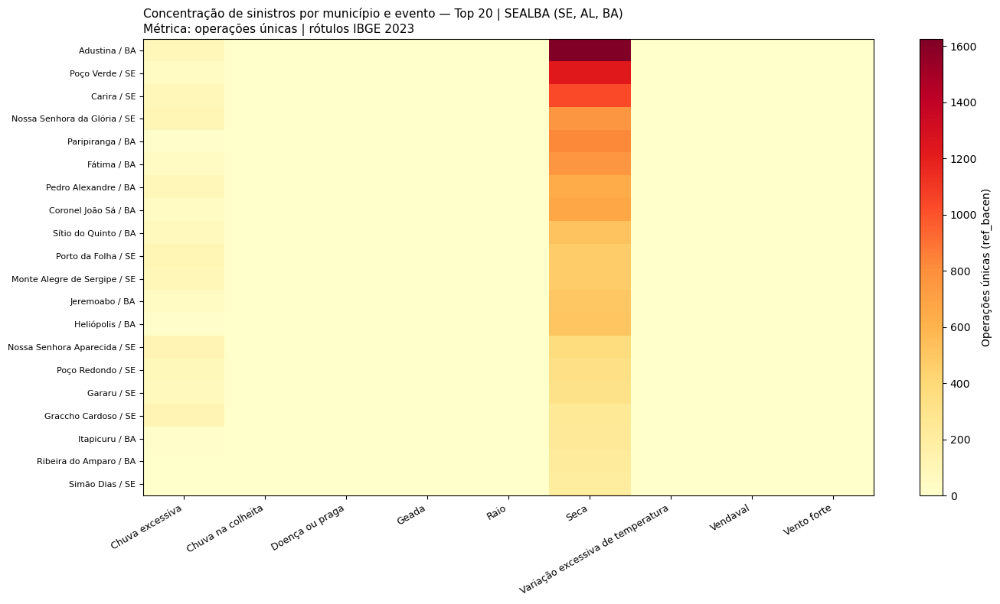
Figura 83 - Heatmap município × evento — recorte SEALBA.
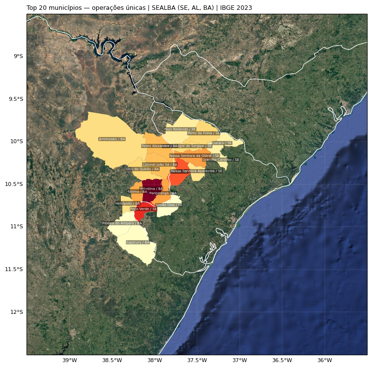
Figura 84 - Coroplético Top 20 — SEALBA.
Seção 2 — escala do produtor
Três indicadores complementares por produtor:
Indicador |
Pergunta |
Cálculo |
|---|---|---|
|
Quantos contratos diferentes? |
|
|
Em quantos anos distintos? |
|
|
Quantos tipos de evento? |
|
Aviso
Recorrência ≠ irregularidade. Um produtor com muitas COPs pode estar em região com eventos frequentes, ter vários contratos simultâneos, ou ser cooperado com vários registros passando por uma IF cooperativa.
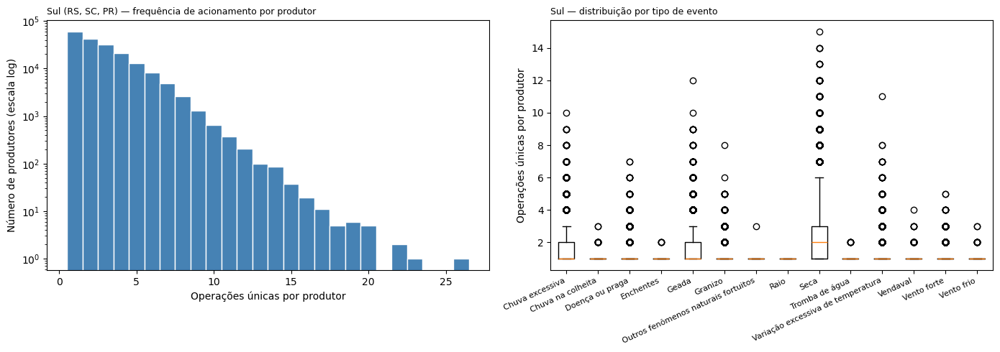
Figura 85 - Histograma (escala log) e boxplot por evento — Sul. A distribuição é tipicamente lei de potência: cauda longa de produtores muito recorrentes.
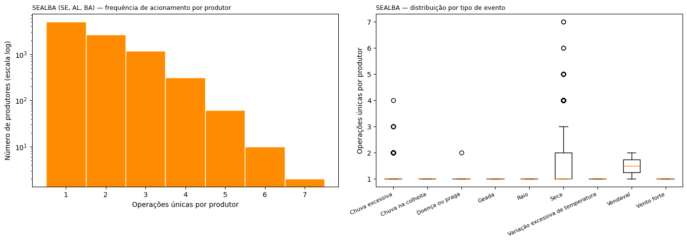
Figura 86 - O mesmo gráfico para SEALBA. A distribuição de recorrência tende a ser mais concentrada no semi-árido.
Seção 3 — escala da gleba: arredondamento de coordenadas
Em vez de criar um grid sofisticado (H3, S2), arredondamos lat/lon para 2 casas decimais (~1 km² por célula):
gdf_sul_def['lat_round'] = gdf_sul_def['latitude_centroide'].round(2)
gdf_sul_def['lon_round'] = gdf_sul_def['longitude_centroide'].round(2)
recorr_esp_sul = (
gdf_sul_def.groupby(['lat_round', 'lon_round', 'nome_evento'])
.agg(n_anos=('ano_emissao', 'nunique'),
n_operacoes=('ref_bacen', 'nunique'),
n_cops=('ref_bacen', 'count'))
.reset_index()
.sort_values('n_anos', ascending=False)
)
Mapas de hotspots persistentes (hexbin com
reduce_C_function=np.max(n_anos)) — um mapa por evento:
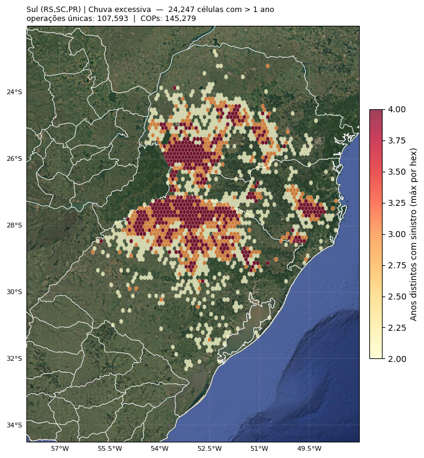
Figura 87 - Recorrência espacial — Sul, Chuva excessiva. Cor da hex = número máximo de anos distintos com COP entre as células-base agrupadas.
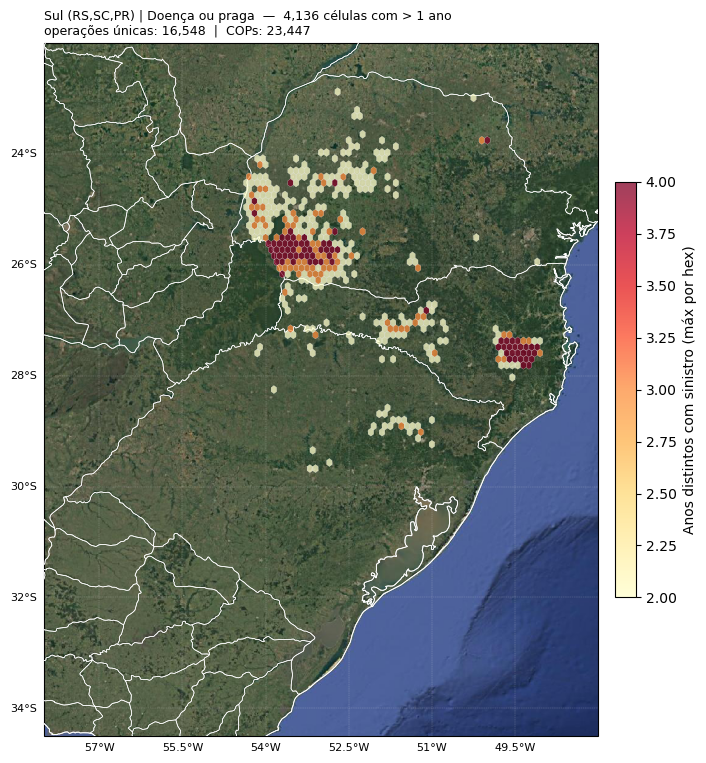
Figura 88 - Recorrência espacial — Sul, Geada.
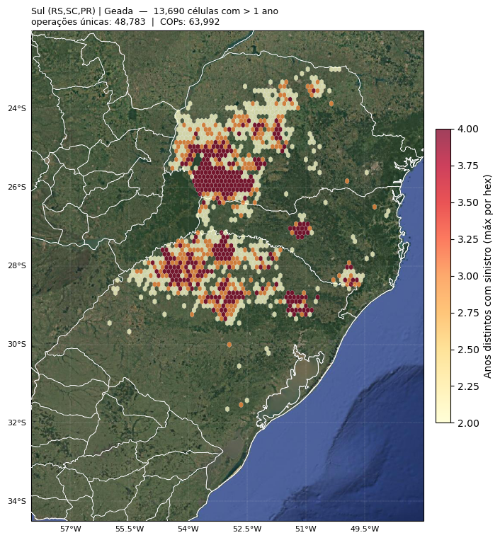
Figura 89 - Recorrência espacial — Sul, Seca.
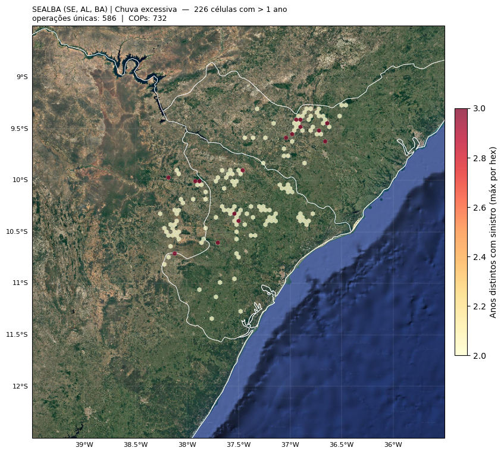
Figura 90 - Recorrência espacial — SEALBA. Note a concentração em municípios da zona da mata sergipana e do sertão alagoano.
Seção 4 — densidade espacial (hexbin sem ponderação por anos)
A Seção 3 perguntou “a mesma área retorna em anos diferentes?”; agora perguntamos “onde fica a maior densidade absoluta, independente do tempo?”
Seção 3 |
Seção 4 |
|---|---|
Pondera por |
Soma todas as COPs (count) |
Foca em persistência |
Foca em volume |
Mostra hotspots crônicos |
Mostra eventos massivos pontuais |
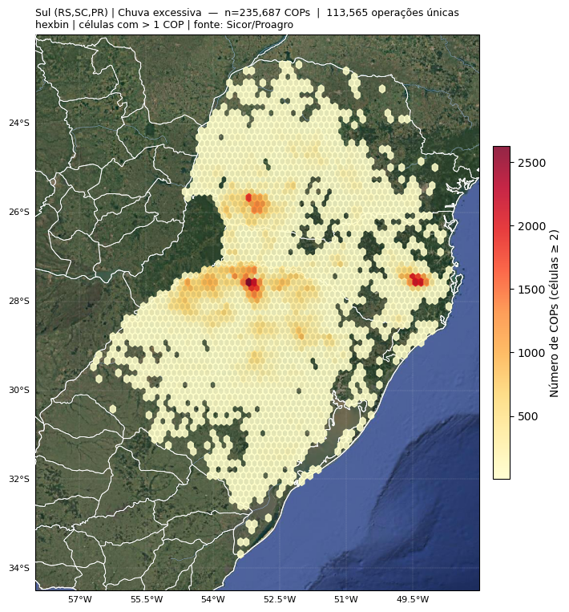
Figura 91 - Hexbin de densidade total — Sul, Chuva excessiva.
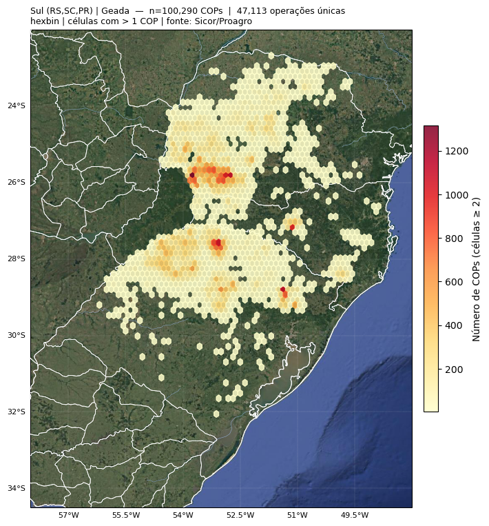
Figura 92 - Hexbin de densidade total — Sul, Seca.
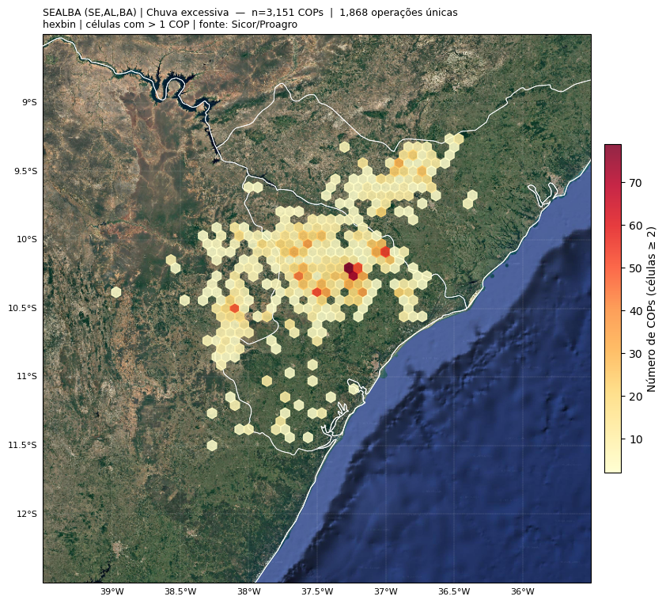
Figura 93 - Hexbin de densidade — SEALBA.
Seção 5 — análise de atores (perito × IF × tríades)
Três níveis em ordem crescente de granularidade:
Perito — quem assina os laudos;
IF (Instituição Financeira) — quem origina o crédito;
Tríades produtor × perito × IF — combinações recorrentes ao longo dos anos.
perfil_perito_sul = (
gdf_sul_def[gdf_sul_def['cd_cpf_perito_hash'].notna()]
.groupby('cd_cpf_perito_hash')
.agg(n_cops=('ref_bacen', 'count'),
n_operacoes=('ref_bacen', 'nunique'),
n_produtores=('cd_cpf_produtor_hash', 'nunique'),
n_municipios=('cd_ibge_municipio', 'nunique'),
n_anos=('ano_emissao', 'nunique'),
vl_pago=('vl_pago_total', 'sum'))
.reset_index()
)
trios_sul = (
gdf_sul_def[gdf_sul_def['cd_cpf_perito_hash'].notna()]
.groupby(['cd_cpf_produtor_hash', 'cd_cpf_perito_hash', 'cnpj_if_hash'])
.agg(n_cops=('ref_bacen', 'count'),
n_operacoes=('ref_bacen', 'nunique'),
n_anos=('ano_emissao', 'nunique'),
vl_pago=('vl_pago_total', 'sum'))
.reset_index()
.sort_values(['n_anos', 'n_operacoes'], ascending=False)
)
trios_sul_rec = trios_sul[trios_sul['n_anos'] > 1]
Seção 6 — concentração de auditores: lorenz e gini
A Curva de Lorenz (Max Otto Lorenz) [87] mostra a distribuição completa de operações entre os peritos em um único gráfico. O coeficiente de Gini (Corrado Gini) [88] resume essa desigualdade em um número entre 0 (igualdade perfeita) e 1 (concentração máxima).
vals_sul = np.sort(perfil_perito_sul['n_operacoes'].values)
x_sul = np.linspace(0, 1, len(vals_sul))
y_sul = vals_sul.cumsum() / vals_sul.sum()
gini_sul = round(1 - 2 * np.trapz(y_sul, x_sul), 3)
def gini_calc(serie):
"""Gini via fórmula direta com índices."""
v = np.sort(serie.values)
n = len(v)
if n == 0 or v.sum() == 0: return np.nan
idx = np.arange(1, n + 1)
return round((2 * np.sum(idx * v) / (n * v.sum())) - (n + 1) / n, 3)
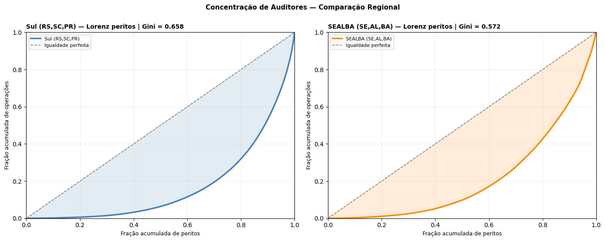
Figura 94 - Curvas de Lorenz lado a lado para Sul e SEALBA. Linha diagonal = igualdade perfeita (todos os peritos com o mesmo volume); área entre a curva e a diagonal = grau de concentração (Gini).
Interpretação típica
Recorte |
Gini |
Leitura |
|---|---|---|
Sul (RS, SC, PR) |
~0,66 |
Concentração alta — Pareto típico: ~20% dos peritos respondem por ~80% das operações. |
SEALBA (SE, AL, BA) |
mais baixo |
Concentração menor — número de peritos por região é relativamente menor, mas a carga média é mais distribuída. |
Causas prováveis no Sul:
maior volume absoluto — economia de escala favorece especialização;
cultivos dominantes (soja-verão + trigo-inverno) demandam expertise técnica similar — peritos especializados ganham vantagem competitiva;
carga média elevada (~300 operações/perito).
Próximos passos
Aula 5 — análise integrada de COPs: recorrência, concentração e valores — análise integrada com razão pago / crédito, raio de atuação por perito, tríades recorrentes.
Análise de recorrência meteorológica em áreas e culturas — fundamentos teóricos da análise de recorrência.